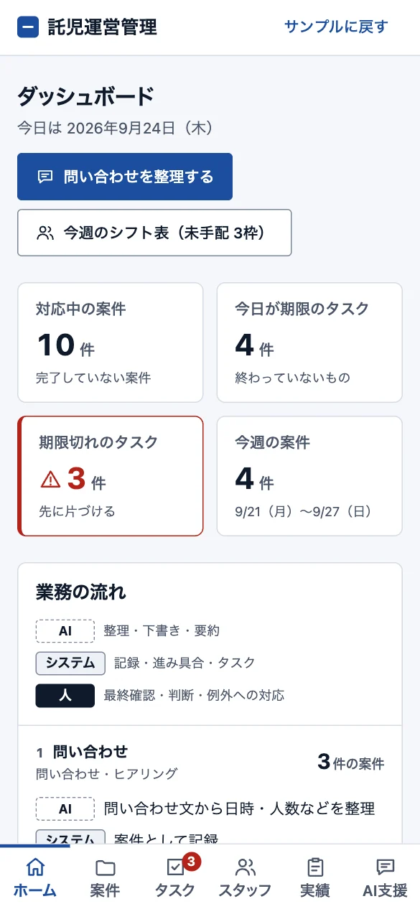
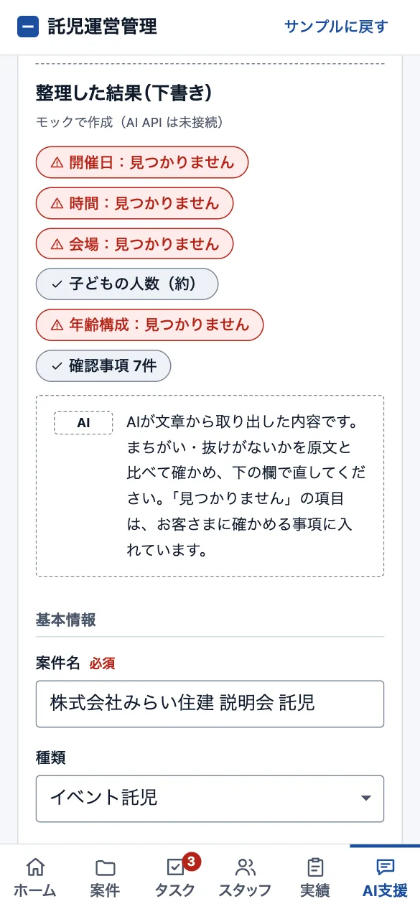
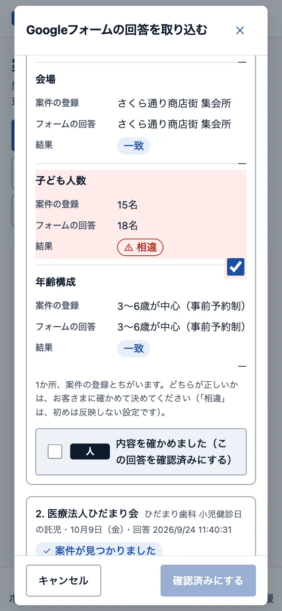
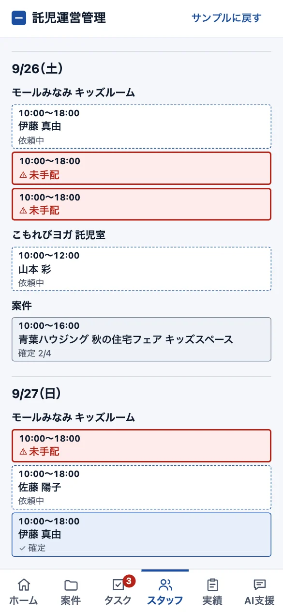
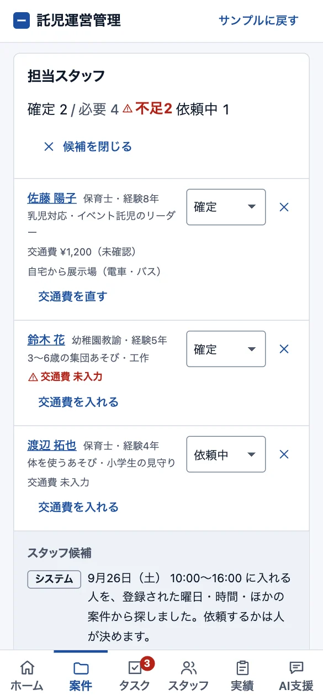
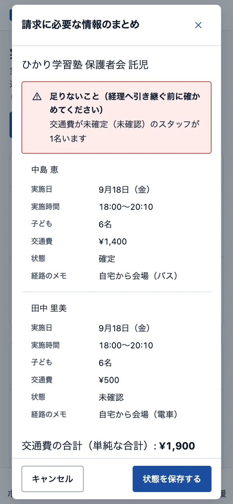

イベント託児の運営管理システム
イベント託児・常設託児室の運営担当者が、問い合わせ・申込・スタッフの手配・シフト・実績・請求の準備までを、1つの流れで管理する業務Webアプリです。AIは情報の整理と文章の下書きだけを受け持ち、最終確認と判断は人が行う役割分担にしています。ポートフォリオ用の架空の案件として、企画から開発まで行いました。
使い方マニュアル（PDF・28ページ）を開く（別のページで開きます）

困りごと
「問い合わせは公式LINE、申込はGoogleフォーム、シッターの予定はスプレッドシートやLINEと、情報があちこちにある。どの案件のスタッフが足りないのか、常設託児室のシフトに穴はないか、請求に必要な交通費はそろったかが、担当者の頭の中にしかない。」
そこで、問い合わせから請求の準備までを1つの流れでつなぎ、AI・システム・人の役割を分けて、抜け漏れなく回せる形を目指しました。
作ったもの

業務の流れと役割分担がひと目で
問い合わせから実績までの6つの段階と、それぞれで AI・システム・人が何をするかを表で出します。今日のタスクと期限切れの数もすぐわかります。

問い合わせ文を整理して案件に
公式LINEなどで届いた問い合わせの文を貼り付けると、日時・会場・人数などに分けます。見つからない項目は赤く出し、人が確かめて直してから案件に登録します。

Googleフォームの申込内容を突き合わせ
フォームの回答を貼り付けると、案件と自動で突き合わせ、ちがう所を赤く出します。反映するかは人が決めます。フォームから自動で届く受け口も設計しています。

常設託児室のシフト表で未手配を発見
3か所の枠を1週間の表と、1日の横向きのタイムライン（だれが何時まで入るか）で見ます。だれも入っていない枠は赤く出ます。曜日・時間・ほかの予定が合う人だけが、手配の候補に出ます。

条件に合うスタッフを探す
案件の日時に入れるスタッフを、登録された曜日・時間・ほかの案件やシフトから探します。外れた人の理由も出るので、手配の相談がしやすくなります。

請求に必要な情報をまとめて経理へ
スタッフごとの交通費と実績をまとめ、足りないことを知らせます。CSVで書き出して、経理へ引き継げます（請求額は計算しません）。
画面は、架空のデータを入れて撮影しています。
工夫したこと
- AI・システム・人の役割を画面に出す
- 「AI」「システム」「人」の札を画面の各所に出し、AIに任せる所と、人が決める所を分けています。
- AIの結果は、人が確かめてから使う
- 下書きには、人が書きかえる所を〔 〕で残し、残りの数を出します。「確かめました」に印をつけるまで、コピーや登録はできません。送信はしません。
- 抜け漏れを仕組みで防ぐ
- 期限切れのタスクの数をメニューに出します。スタッフが足りないまま次の段階へ進めようとすると知らせが出ます（進めるかどうかは人が決めます）。
- ステータスを進めると、定型のタスクが作られる
- 見積・申込確認・スタッフ手配・最終確認・実施済みのそれぞれで、決まったタスクを期限と担当者つきで作ります。使わないタスクは、1つずつ外せます。
- スタッフの重なりを、案件とシフトの両方で防ぐ
- イベント託児の案件と、常設託児室のシフトの枠を同じ規則で見て、同じ時間に入れない人を、候補から外します。
- 画面を作り直さずに、サーバーとAIへつなげられる
- 保存とAIの窓口をそれぞれ1か所にまとめ、サーバー（ログイン・データベース・本物のAI）に置き換えても、画面を作り直さずに済む形にしています。
進め方
次の3つの観点で整理して作っています。
- 目的から決める
だれが・いつ・何のために使うかを先に決め、「どうなれば完成か」を1つずつ言葉にする
「問い合わせから実績までが1つにつながる」を目的に、機能ごとに「どうなれば完成か」を決めました（例: スタッフ候補には、曜日と時間が合い、同じ時間に別の案件がない人だけが出る）。
- 続けられる使いやすさ
文字の大きさ・色の濃さ・押しやすさを、決めた基準で確かめる
事務所の PC で1日開いておく前提で、今日やることを最初の画面に集めました。スマホでは、表を1件ずつのカードに切り替えます。
- データの安全
どのデータをどこへ送ってよいかを先に表で決め、公的なガイドラインをもとに確かめる
サーバーは、ログインした人だけが使え、管理者と運営担当で権限を分ける設計にしました。AIのAPIキーはサーバーにだけ置き、ブラウザには渡しません。AIへ送る情報は、用途ごとに絞ります。IPA・OWASP の項目との対応表で、抜けがないか確かめています。
安全とデータの扱い
- ログインした人だけが使え、管理者と運営担当で権限を分けます。
- 2人が同時に直しても、片方の内容が消えないようにします。ステータスを変えた記録も残します。
- AIのAPIキーはサーバーにだけ置き、ブラウザには渡しません。AIに情報を渡すときは、用途ごとに絞ります。たとえばスタッフへの依頼文には、お客さまの名前や連絡先を入れません。
- Googleフォームの回答は、合言葉つきの受け口で自動で受け取ります。
- IPA・OWASP の項目との対応表に、対策をまとめています。
- ブラウザ画面。PC とスマホで使う
- サーバー（Java・Spring Boot）ログイン・権限・入力チェック
- データベース（PostgreSQL）案件・スタッフ・タスク・実績
- AI（Claude API）APIキーはサーバーにだけ置く
納品物のイメージ
- Webアプリ一式
- 画面のファイル、サーバーのプログラム（Java・Spring Boot）、データベースの定義（PostgreSQL）をまとめてお渡しします。サーバーに置いて公開すると、担当者の方がログインして、同じデータを見ながら使えます
- 使い方マニュアル（PDF）
- 運営担当者が、問い合わせの受付から実績の記録まで、画面の写真を見ながら順に進められる資料。毎日の使いかた・困ったときの対処・導入の進め方までを、28ページにまとめています
あわせて、次の資料もお付けします。
- 設計書
- 画面の流れ、保存するデータの形、外とのつながりをまとめた資料。サーバーとデータベースの設計も含みます
- 動作確認の記録
- 何を確かめて、どうだったかの一覧
見本は架空の案件のため、一部そろっていない資料もあります。この見本では、サーバーのプログラムとデータベースは設計書までで、まだ作っていません。画面写真は、この事例ページも使い方マニュアルも、架空のデータで撮影しています。